12 παραγωγές
Θέατρο
Μίξη ήχου, προγραμματισμός φώτων και AV, και εκτέλεση παραστάσεων για θεατρικές παραγωγές στην Αθήνα και σε περιοδείες σε όλη την Ελλάδα.
2025
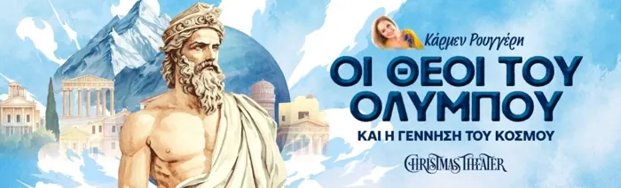
Οι Θεοί του Ολύμπου
Christmas Theater
Προγραμματισμός AV σε Qlab · Εκτέλεση παράστασης
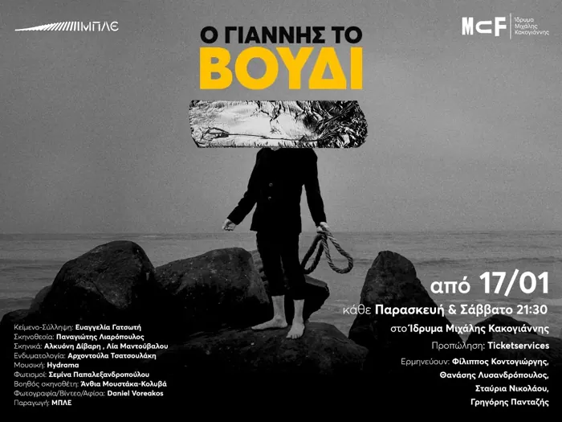
Ο Γιάννης το Βόδι
Ίδρυμα Μιχάλης Κακογιάννης
Μίξη ήχου · Προγραμματισμός φώτων · Εκτέλεση παράστασης
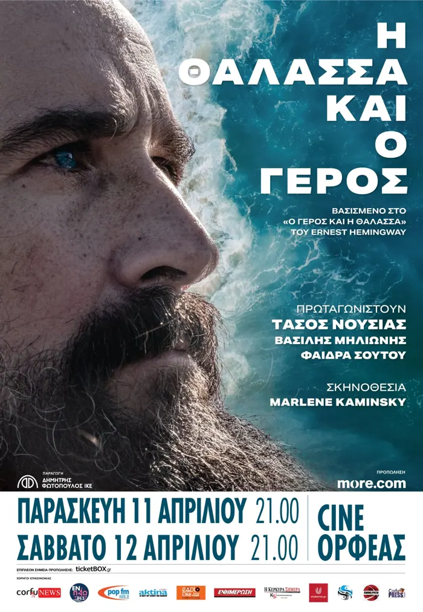
Η Θάλασσα και ο Γέρος
Περιοδεία
Μίξη ήχου · Projection mapping · Εκτέλεση παράστασης
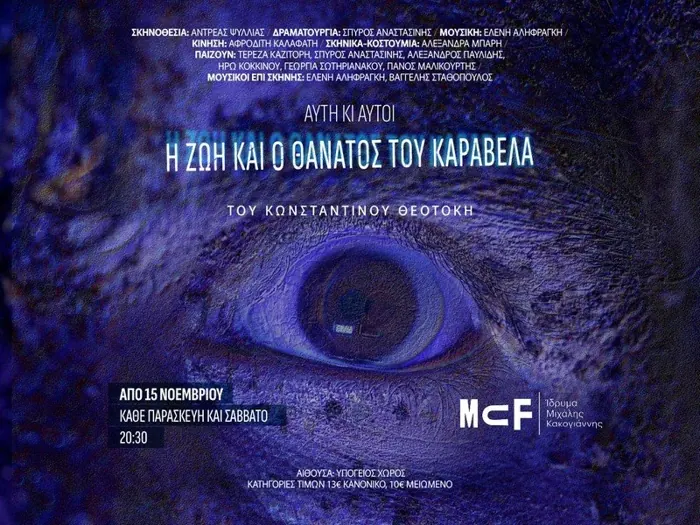
Η Ζωή και ο Θάνατος του Καραβέλα
Ίδρυμα Μιχάλης Κακογιάννης
Μίξη ήχου · Προγραμματισμός φώτων · Εκτέλεση παράστασης
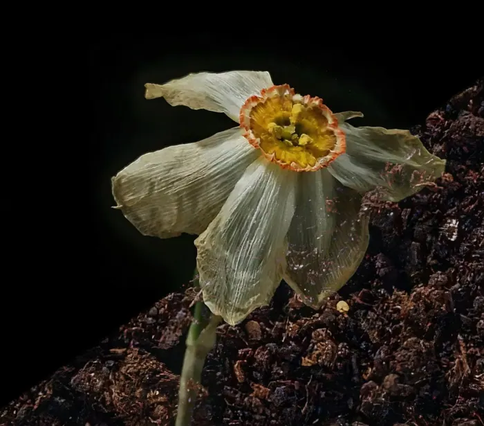
Αντιγόνη
Μέγαρο Μουσικής Αθηνών
Σύνθεση μουσικής · Προγραμματισμός Ableton · Μίξη ήχου · Εκτέλεση παράστασης
2024
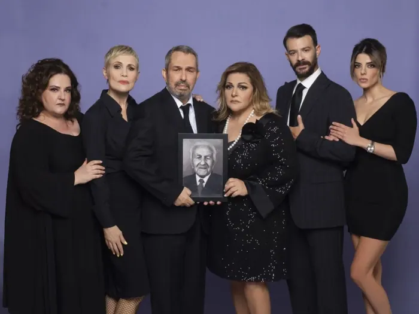
Μπαμπάδες με Ρούμι
Περιοδεία
Μίξη ήχου · Προγραμματισμός φώτων · Εκτέλεση παράστασης
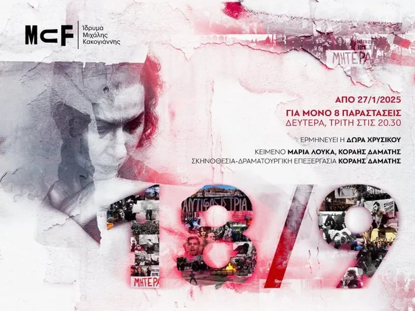
18/9
Ίδρυμα Μιχάλης Κακογιάννης
Μίξη ήχου · Προγραμματισμός φώτων · Προγραμματισμός Qlab · Εκτέλεση παράστασης
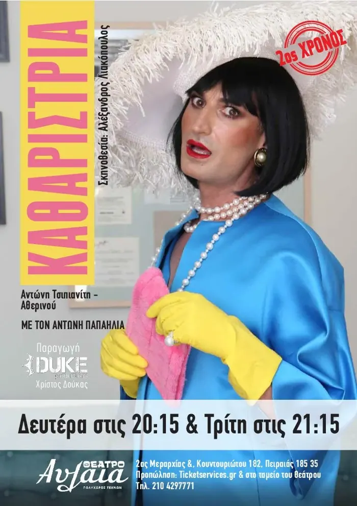
Καθαρίστρια
Θέατρο Coronet
Μίξη ήχου · Εκτέλεση παράστασης
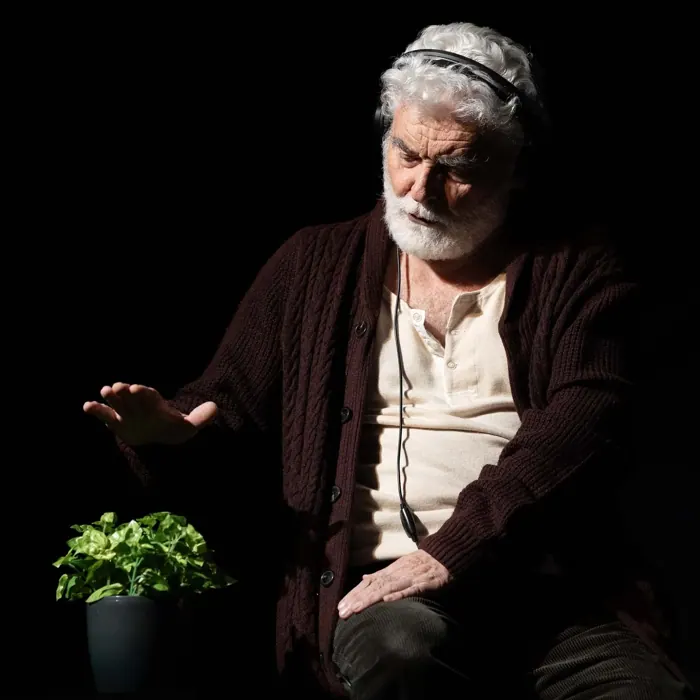
Τα Τελευταία Φεγγάρια
Θέατρο Coronet
Μίξη ήχου · Εκτέλεση παράστασης
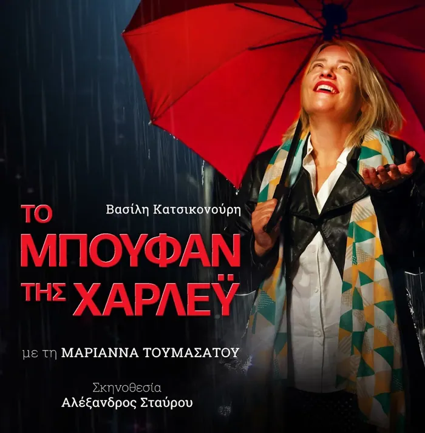
Το Μπουφάν της Χάρλεϊ
Θέατρο Coronet
Μίξη ήχου · Προγραμματισμός Qlab · Εκτέλεση παράστασης
2023
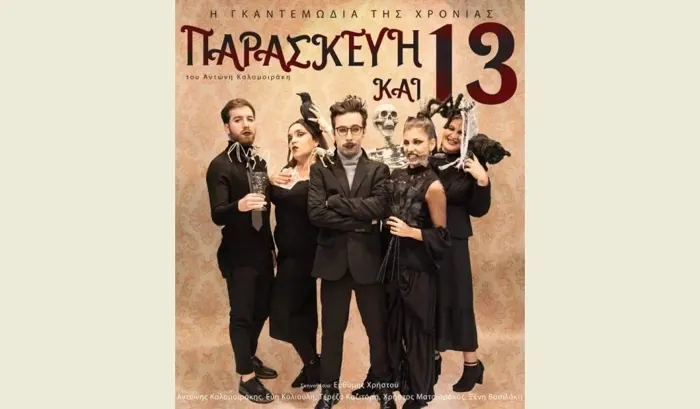
Παρασκευή και Δεκατρείς
Περιοδεία
Μίξη ήχου · Εκτέλεση παράστασης
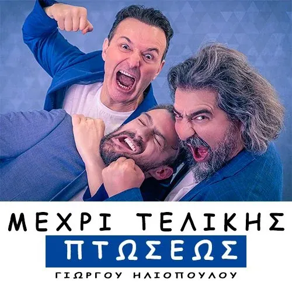
Μέχρι Τελικής Πτώσεως
Περιοδεία
Μίξη ήχου · Προγραμματισμός SCS · Εκτέλεση παράστασης